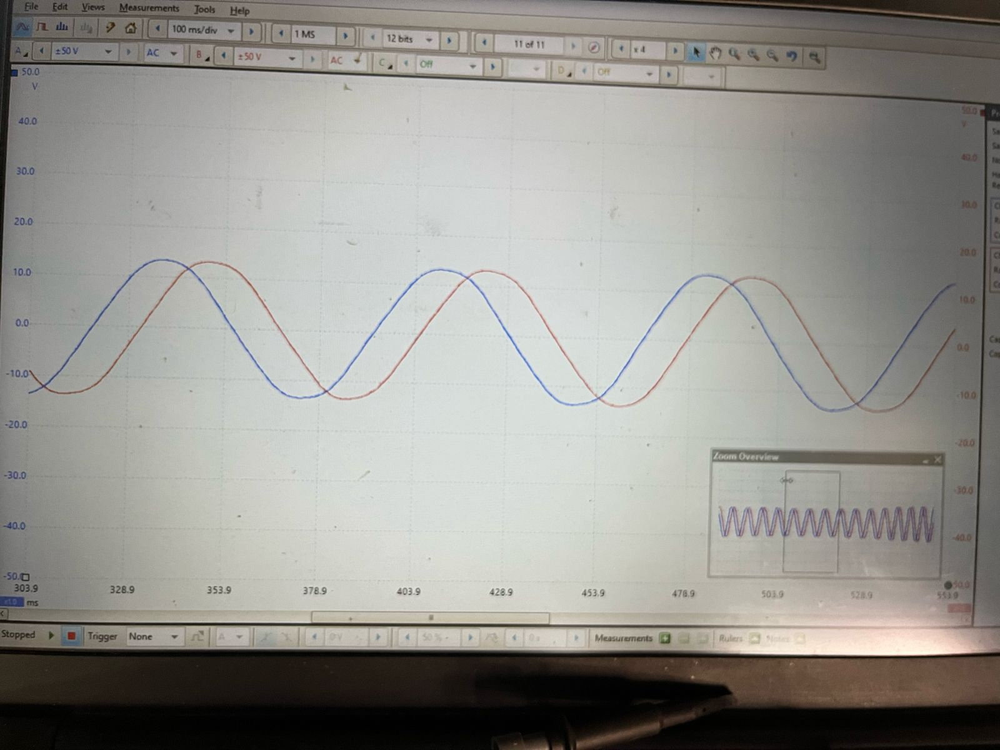

A practical, assumption-driven control method used for motor bring-up, testing, and low-performance applications.
Open-loop V/f (Volts-per-Hertz) control is the simplest way to operate an AC motor using an inverter. It relies on predictable physics rather than feedback, making it easy to implement—but fragile under load.
V/f control works not because it is smart, but because the system behaves nicely when we do not push it.
V/f control sits at the lowest end of the motor-control complexity spectrum. It avoids feedback entirely and assumes the rotor will follow the rotating stator field.
It deliberately does not include:
Electrical frequency sets speed. Voltage magnitude sets magnetic flux.
Key condition:
Maintain V / f ≈ constant to keep air-gap flux stable
Increasing frequency without increasing voltage weakens flux, reducing torque capability.
As the rotor spins, permanent magnets induce voltage in the stator windings. This back-EMF increases with speed and directly opposes the applied voltage.
No feedback exists to correct errors once synchronism is lost.
Always ramp frequency. The rotor cannot follow instantaneous changes.
At low frequency, stator resistance dominates. A small voltage boost is often required.
Ramp frequency to zero, allow settling, then reverse.
In EV inverter development, V/f control is typically the first firmware flashed—never the last.